Guide complet des compétences légendaires de Dante pour Hero Wars Alliance
- By: Alexandre Domingos. .
Maîtrisez les lances spectrales, les synergies d’esquive et les améliorations de reliques
Dante est un tireur d’élite qui transforme les combats grâce à ses lances spectrales, ses repoussements et ses contre-attaques déclenchées par l’esquive. Dans ce guide, vous trouverez des priorités claires, étape par étape, pour les compétences et les reliques afin d’en tirer le meilleur aussi bien lors de courtes escarmouches que dans des combats prolongés.
Nous expliquerons quelles compétences améliorer en premier, comment les reliques modifient ses statistiques et proposerons des recommandations rapides de talismans — le tout rédigé pour aider les débutants et les joueurs intermédiaires à faire de meilleurs choix plus rapidement.
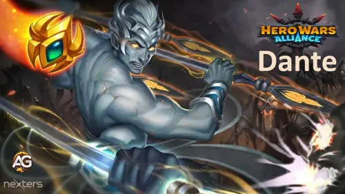
Qui est Dante dans Hero Wars Alliance ?
Dante est un tireur de la ligne intermédiaire dont le kit est centré sur les attaques physiques, les repoussements et les contre-attaques déclenchées par l’esquive.
- Classe principale : Tireur d’élite
- Position : Ligne intermédiaire
- Stat principale : Agilité
- Faction : Voie de l’Éternité
- Comment obtenir des Pierres d’âme : Sources en jeu (événements, boutique de la tour et offres spéciales) — consultez le calendrier et la boutique en jeu.
- Synergie : Fonctionne mieux avec des alliés axés sur l’esquive et des équipes qui amplifient le DPS physique et le contrôle de foule.
- Classement Hydra : Consultez la page Classement Hydra du site pour les classements saisonniers.
Avantages et inconvénients de Dante - Hero Wars Alliance
✅ Avantages
- DPS physique soutenu élevé qui évolue très bien avec l’Attaque physique.
- Excellent contrôle du champ de bataille grâce aux repoussements fréquents.
- Les reliques légendaires ajoutent des effets puissants (pénétration d’armure, nouvelles compétences).
❌ Inconvénients
- Dépend du maintien de l’esquive et de la synergie d’équipe pour libérer tout son potentiel.
- Moins efficace sans une bonne sélection de talismans ou un investissement en reliques.
- Le placement est crucial : un mauvais positionnement réduit les opportunités de contre-attaque.
Dante — Comparaison des statistiques max des talismans
| Statistique | Talisman de l’Âme | Talisman de la Riposte |
|---|---|---|
| Attaque physique |
 122,223
122,223
|
124,223
|
| Agilité |
 16,245
16,245
|
14,245
|
| Esquive |
 11,445
11,445
|
18,045
|
| Armure |
 35,908
35,908
|
33,908
|
| Santé |
 868,517
868,517
|
868,517
|
| Attaque magique |
 16,546
16,546
|
16,546
|
| Chances de coup critique |
 7,354
7,354
|
754
|
| Force |
 3,891
3,891
|
3,891
|
| Écrasement |
 4,177
4,177
|
4,177
|
| Pénétration d'Armure |
 21.300
21.300
|
21.300
|
| Recommandation rapide | Bon choix équilibré — agilité et armure plus élevées. | Recommandé : attaque physique et esquive plus élevées pour Dante |
Guide des talismans de Dante – Hero Wars Alliance
Choisir le bon talisman pour Dante peut faire une énorme différence en combat. Contrairement aux skins (où vous obtenez tous les bonus), seul le talisman équipé accorde ses bonus. Ci-dessous, nous détaillons les deux options, montrons la valeur totale des emplacements de reroll (les 3 slots combinés) et expliquons quel talisman est le meilleur pour maximiser les compétences de Dante et ses performances globales.
Talisman de l’Âme
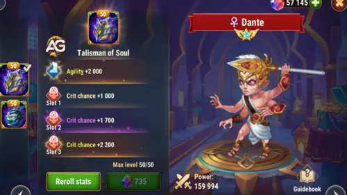
- Slot de statistique principale : Agilité +2 000
- Chaque point d’Agilité donne :
- 2 points d’Attaque physique
- 1 point d’Armure
- 1 point supplémentaire d’Attaque physique si l’Agilité est la stat principale du héros (Dante : Oui)
- Attaque physique provenant de l’Agilité : 6 000
- Armure provenant de l’Agilité : 2 000
- Slots de reroll (les 3) : Chances de coup critique +6 600 (2 200 × 3)
|
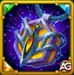 Talisman de l’Âme |
Stat principale totale |
|---|---|
|
Agilité |
2 000 |
| Slot 1 | Slot 2 | Slot 3 | Bonus total de reroll |
|---|---|---|---|
|
+2 200 |
+2 200 |
+2 200 |
+6 600 |
Talisman de la Riposte
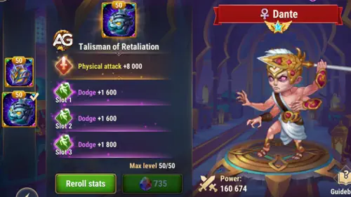
- Slot de statistique principale : Attaque physique +8 000
- Slots de reroll (les 3) : Esquive +6 600 (2 200 × 3)
|
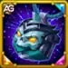 Talisman de la Riposte |
Stat principale totale |
|---|---|
|
Attaque physique |
8 000 |
| Slot 1 | Slot 2 | Slot 3 | Bonus total de reroll |
|---|---|---|---|
|
+2 200 |
+2 200 |
+2 200 |
+6 600 |
Quel talisman choisir ?
Résumé :
Talisman de l’Âme augmente l’Agilité, ce qui renforce à la fois l’Attaque physique, l’Armure et les Chances de coup critique. Le Talisman de la Riposte donne une Attaque physique plate beaucoup plus élevée ainsi qu’un gros bonus d’Esquive.
- Si vous voulez des dégâts plus constants et plus de survie (surtout contre les équipes basées sur les critiques), le Talisman de l’Âme est un choix solide et équilibré. Le bonus de critique augmente les chances d’infliger des dégâts doublés, ce qui peut être décisif si Dante est construit autour des critiques et que votre équipe fournit des buffs de critique.
- Si vous voulez maximiser les dégâts explosifs et le potentiel de contre-attaque de Dante (surtout dans les équipes basées sur l’esquive), le Talisman de la Riposte est le meilleur choix. L’Attaque physique supplémentaire augmente tous les dégâts de compétences (y compris les critiques), et le bonus d’Esquive déclenche plus d’attaques de Rétribution, rendant Dante beaucoup plus dangereux et plus difficile à vaincre.
Coup critique vs constance :
Les coups critiques infligent le double de dégâts dans Hero Wars Alliance. Si votre Dante a de forts multiplicateurs de critique, beaucoup de buffs de critique et que vous cherchez de gros pics de dégâts, le Talisman de l’Âme peut être meilleur dans les combats courts ou contre des équipes à faible esquive. Cependant, la plupart des combats et des compositions d’équipe favorisent la constance et la survie — où l’Esquive et l’Attaque physique sont plus importantes pour le kit et les synergies de Dante.
Conseils d’Alexandre : Pour la majorité des joueurs, le Talisman de la Riposte est le meilleur talisman pour Dante dans Hero Wars. Il offre le plus gros boost sur ses compétences clés : Rétribution, Prévoyance et Instrument du Destin, et fait de Dante une menace majeure aussi bien en attaque qu’en défense. Utilisez le Talisman de l’Âme uniquement si vous voulez spécifiquement plus de chances de coup critique ou si vous affrontez des équipes où les dégâts explosifs sont plus importants que la constance et le contrôle global.
Priorité d’amélioration des compétences de la relique légendaire de Dante - Hero Wars Alliance
Dante est un tireur de la ligne intermédiaire qui contrôle le champ de bataille avec des lances spectrales. Son kit repose sur les repoussements, les mécaniques d’esquive et l’affaiblissement des ennemis. Comprendre quelles compétences prioriser vous aidera à maximiser son potentiel dévastateur en combat.
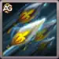
1er – Instrument du Destin
Il s’agit de la principale compétence de dégâts de Dante : il lance 4 lances spectrales sur plusieurs ennemis, infligeant des dégâts physiques tout en les repoussant. L’effet de recul est crucial, car il perturbe le positionnement adverse et se combine parfaitement avec son amélioration légendaire. Les dégâts de base sont calculés comme suit : (95 % de l’Attaque physique + 10 150), ce qui en fait une source fiable de dégâts constants tout au long du combat.
Formule avec le Talisman de l’Âme
- Formule : Dégâts physiques : 126 362 (95 % × 122 223 + 10 150)
Formule avec le Talisman de la Riposte
- Formule : Dégâts physiques : 128 162 (95 % × 124 223 + 10 150)
Infos d’animation de la compétence
- Délai d’animation : 0,88 seconde
- Mots-clés : Repoussement, Contrôle
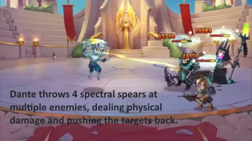
Priorité d’évolution : Élevée – Cette compétence devient beaucoup plus puissante avec son amélioration légendaire, qui ajoute de la pénétration d’armure chaque fois que vous repoussez des ennemis. Comme Dante utilise souvent des effets de recul, cela crée un effet boule de neige où ses dégâts augmentent fortement au fil du combat.
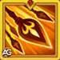
1er – Instrument du Destin (Amélioré) Reliques légendaires : Niveau 10
L’amélioration légendaire transforme cette compétence en véritable tournant du combat. Chaque fois que Dante repousse un ennemi (ce qui arrive fréquemment avec son kit), il gagne un bonus de pénétration d’armure pendant 6 secondes. Le bonus est de (7,5 % de l’Attaque physique + 6 000). Cet effet cumulable signifie que dans les combats prolongés, Dante devient de plus en plus dangereux, capable de percer même les ennemis les plus résistants.
Formule avec le Talisman de l’Âme
- Formule : Bonus de pénétration d’armure : 15 167 (7,5 % × 122 223 + 6 000)
Formule avec le Talisman de la Riposte
- Formule : Bonus de pénétration d’armure : 15 317 (7,5 % × 124 223 + 6 000)
Infos d’animation de la compétence
- Durée : 6 secondes
- Mots-clés : Augmentation de la pénétration d’armure
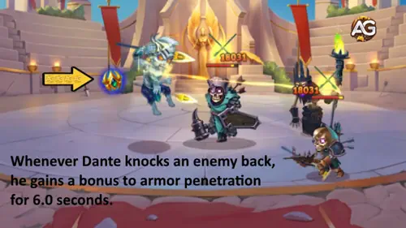
Priorité d’évolution : Très élevée – Cette amélioration est absolument essentielle pour la viabilité de Dante en fin de jeu. L’accumulation de pénétration d’armure le rend redoutable contre les équipes très résistantes et augmente considérablement son DPS global lors des combats prolongés.
2e – Prémonition
Prémonition est une puissante compétence de soutien d’équipe qui augmente l’Esquive de tous les alliés pendant 7 secondes. Le bonus d’esquive est de (10 % de l’Attaque physique + 3 000). Cette compétence est particulièrement précieuse, car l’esquive est au cœur du kit de Dante : lorsqu’un allié esquive, cela déclenche sa compétence Rétribution. Voyez-la comme une compétence qui protège votre équipe tout en créant plus d’opportunités de contre-attaque pour Dante.
Formule avec le Talisman de l’Âme
- Formule : Bonus d’esquive : 15 222 (10 % × 122 223 + 3 000)
Formule avec le Talisman de la Riposte
- Formule : Bonus d’esquive : 15 422 (10 % × 124 223 + 3 000)
Infos d’animation de la compétence
- Temps de recharge initial : 4 secondes
- Temps de recharge : 14 secondes
- Durée : 7 secondes
- Délai d’animation : 0,5 seconde
- Mots-clés : Amélioration (Buff)
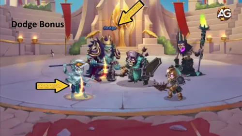
Priorité d’évolution : Élevée – Cette compétence mérite une haute priorité, car elle permet le style de jeu réactif de Dante. Plus d’esquives signifient plus de déclenchements de Rétribution, ce qui se traduit par davantage de dégâts et de contrôle. Elle est particulièrement efficace lorsqu’elle est associée à d’autres héros axés sur l’esquive.
Conseils d’Alexandre : Lorsque vous voyez la flamme jaune sur Dante ou ses alliés, cela signifie qu’ils reçoivent le bonus d’esquive de Dante même s’ils n’ont pas l’Esquive comme statistique. Cette interaction est encore plus forte avec Octavia, qui amplifie l’effet et offre en plus une capacité d’esquive contre les attaques magiques. Remarque : l’Esquive ne s’applique qu’aux attaques physiques.
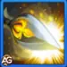
3e – Rétribution
Rétribution est la compétence de contre-attaque réactive de Dante. Chaque fois que Dante ou un allié esquive des dégâts, il lance automatiquement une lance spectrale sur l’ennemi le plus proche, infligeant (90 % de l’Attaque physique + 4 150) de dégâts et le repoussant. Cette compétence a un temps de recharge extrêmement court de 0,1 seconde, ce qui signifie que dans des compositions riches en esquive, Dante peut la déclencher plusieurs fois de suite, créant un déluge incessant de contre-attaques.
Formule avec le Talisman de l’Âme
- Formule : Dégâts physiques : 114 151 (90 % × 122 223 + 4 150)
Formule avec le Talisman de la Riposte
- Formule : Dégâts physiques : 115 951 (90 % × 124 223 + 4 150)
Infos d’animation de la compétence
- Temps de recharge : 0,1 seconde
- Délai d’animation : 0,72 seconde
- Mots-clés : Repoussement, Contrôle
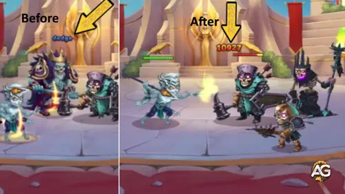
Priorité d’évolution : Très élevée – C’est sans doute la compétence la plus importante de Dante, car elle constitue la base de son potentiel de dégâts. Combinée à des taux d’esquive élevés grâce à Prémonition et à sa sixième compétence, Rétribution peut se déclencher en continu, permettant à Dante d’infliger des dégâts massifs tout en contrôlant les positions ennemies avec des repoussements constants.
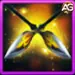
4e – Chaînes de Faiblesse
Chaque fois qu’une des lances spectrales de Dante touche un ennemi, cette compétence réduit la statistique principale de la cible pendant 7 secondes. La réduction est de (6 % de l’Attaque Physique + 2 400). Ce débuff est particulièrement efficace contre les héros infligeant des dégâts, car il affaiblit leur statistique principale (Force pour les guerriers, Agilité pour les tireurs, Intelligence pour les mages), réduisant ainsi leur efficacité globale au combat.
Formule avec le Talisman de l’Âme
- Formule : Réduction de la statistique principale : 9 733 (6 % × 122 223 + 2 400)
Formule avec le Talisman de Représailles
- Formule : Réduction de la statistique principale : 9 853 (6 % × 124 223 + 2 400)
Infos d’animation de la compétence
- Durée : 7 secondes
- Mots-clés : Débuff
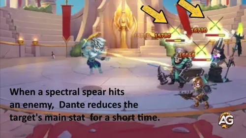
Priorité d’évolution : Moyenne – Bien qu’utile pour réduire les dégâts ennemis, cette compétence est moins impactante que les capacités de dégâts directs et de contrôle de Dante. Elle apporte de l’utilité, mais n’augmente pas autant les performances globales de l’équipe.
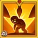
4e – Chaînes de Faiblesse (Améliorée) Relique Légendaire : Niveau 20
L’amélioration légendaire prolonge fortement la durée de la réduction de la statistique principale, passant de 7 secondes à 16 secondes. Cela signifie qu’une fois touchés par les lances de Dante, les ennemis restent affaiblis beaucoup plus longtemps, ce qui réduit considérablement leur efficacité au combat lors des affrontements prolongés. Cette durée étendue facilite aussi le maintien du débuff sur plusieurs ennemis à la fois.
Infos d’animation de la compétence
- Durée : 16 secondes
- Mots-clés : Débuff
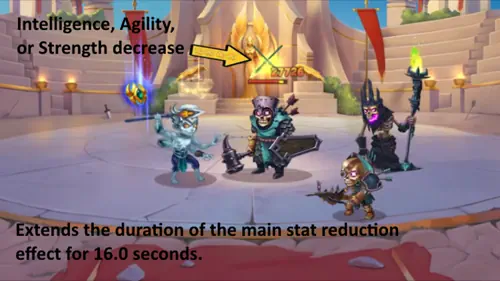
Priorité d’évolution : Moyenne à Élevée – La durée prolongée rend cette amélioration bien plus précieuse que la version de base. Dans les combats longs, maintenir les ennemis affaiblis pendant 16 secondes apporte une grande valeur, surtout contre les équipes avec plusieurs DPS.
L’une des caractéristiques les plus marquantes de Dante est sa capacité à réduire les attributs principaux des ennemis. Cette compétence a un impact majeur sur le champ de bataille, affaiblissant les adversaires et les rendant plus vulnérables aux attaques de votre équipe.
Conseils d’Alexandre : La réduction de la statistique principale de Chaînes de Faiblesse est particulièrement efficace contre différents types de héros :
- Tanks : réduction de leurs points de vie, les rendant moins résistants.
- Mages : diminution de leur attaque magique et de leur défense magique.
- Héros d’Agilité : baisse de leur attaque physique et de leur armure.
Cette adaptabilité fait de Dante un atout précieux dans de nombreuses situations de combat.
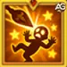
5e – Lancer Perforant (Nouvelle Compétence) Relique Légendaire : Niveau 1
Lancer Perforant est une toute nouvelle compétence débloquée avec la Relique Légendaire de Dante. Toutes les 9 secondes, Dante lance automatiquement une lance spectrale sur l’ennemi le plus proche, infligeant d’énormes dégâts de (225 % de l’Attaque Physique) avec un effet de repoussement. Cette compétence ajoute une couche supplémentaire de dégâts constants et de contrôle, s’activant régulièrement sans condition particulière.
Formule avec le Talisman de l’Âme
- Formule : Dégâts Physiques : 275 002 (225 % × 122 223)
Formule avec le Talisman de Représailles
- Formule : Dégâts Physiques : 279 502 (225 % × 124 223)
Infos d’animation de la compétence
- Recharge : 9 secondes
- Mots-clés : Repoussement, Contrôle
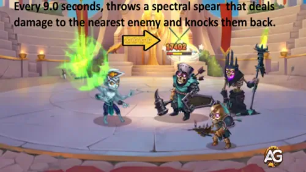
Priorité d’évolution : Très Élevée – Cette nouvelle compétence est extrêmement puissante grâce à son scaling à 225 % de l’Attaque Physique. Son activation automatique garantit des dégâts réguliers, tandis que le repoussement ajoute encore plus de contrôle.
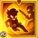
6e – Changement de Cible (Nouvelle Compétence) Relique Légendaire : Niveau 30
Changement de Cible est la compétence légendaire ultime de Dante, qui s’adapte à la situation du combat. Lorsque les ennemis sont proches, il gagne un bonus d’Esquive de (25 % de l’Attaque Physique). Lorsqu’aucun ennemi n’est à proximité, il obtient à la place un bonus d’Attaque Physique de (25 % de l’Attaque Physique). Cette mécanique adaptative rend Dante extrêmement polyvalent.
Formule avec le Talisman de l’Âme
- Formule (Esquive) : Bonus d’Esquive : 30 556 (25 % × 122 223)
- Formule (Attaque) : Bonus d’Attaque Physique : 30 556 (25 % × 122 223)
Formule avec le Talisman de Représailles
- Formule (Esquive) : Bonus d’Esquive : 31 056 (25 % × 124 223)
- Formule (Attaque) : Bonus d’Attaque Physique : 31 056 (25 % × 124 223)
Infos d’animation de la compétence
- Mots-clés : Buff
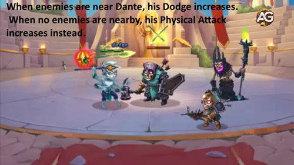
Priorité d’évolution : Très Élevée – Cette compétence est le joyau de la couronne du kit de Dante. L’Esquive bonus synergise parfaitement avec Représailles, tandis que l’Attaque Physique bonus augmente encore plus ses dégâts à distance.
Meilleure skin pour Dante – Hero Wars Alliance
Choisir la bonne skin pour Dante peut considérablement augmenter ses dégâts, sa survie et son contrôle en combat. Ci-dessous se trouve l’ordre de priorité recommandé pour les améliorations, basé sur l’impact réel sur le DPS, la synergie d’équipe et la progression dans les combats longs.
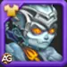
Skin par défaut (Agilité)
Bonus de statistiques : Agilité +1 365
Attaque physique provenant de l’Agilité : 4 095
Armure provenant de l’Agilité : 1 365
Priorité d’évolution : Très élevée – L’Agilité est la statistique principale de Dante, qui augmente tous ses dégâts et son armure. Améliorez toujours cette skin en premier pour obtenir le plus grand bonus global.
Skin+ de l’Oubli (Pénétration d’Armure)
Bonus de statistiques : Pénétration d’Armure +21 300
Priorité d’évolution : Très élevée – Cette nouvelle skin transforme Dante en un héros beaucoup plus agressif et compétitif. La valeur massive de Pénétration d’Armure lui permet d’infliger des dégâts dévastateurs même contre les ennemis les plus blindés, ce qui en fait un choix de premier ordre pour le PvP et le PvE. Cette skin est indispensable pour maximiser le potentiel offensif de Dante.
Skin romantique (Esquive)
Bonus de statistiques : Esquive +2 960
Priorité d’évolution : Moyenne à élevée – L’esquive est essentielle pour déclencher la Riposte et survivre aux dégâts explosifs. À prioriser contre les équipes axées sur les coups critiques ou pour plus de contre-attaques.
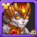
Skin solaire (Attaque physique)
Bonus de statistiques : Attaque physique +7 095
Priorité d’évolution : Élevée – Augmente directement les dégâts de toutes les compétences et des attaques de base. À améliorer après l’Agilité pour un DPS maximal.
Skin d’hiver (Santé)
Bonus de statistiques : Santé +106 645
Priorité d’évolution : Moyenne – Augmente la survie de Dante, surtout dans les combats longs ou contre les équipes magiques. À améliorer si vous avez besoin de plus de résistance.
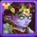
Skin de printemps (Santé)
Bonus de statistiques : Santé +10 650
Priorité d’évolution : Moyenne – La santé supplémentaire aide à survivre aux bursts, mais reste moins impactante que l’Agilité, l’Attaque physique ou l’Esquive. À améliorer après les skins principales de DPS.
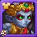
Skin lunaire (Attaque physique)
Bonus de statistiques : Attaque physique +7 095
Priorité d’évolution : Élevée – La skin lunaire augmente non seulement l’Attaque physique globale de Dante (boostant toutes ses compétences et attaques de base), mais elle synergie aussi avec ses capacités de contrôle. Plus d’Attaque physique signifie des affaiblissements plus puissants sur les statistiques ennemies et des bonus d’Esquive plus élevés pour tous les alliés (notamment via Prévoyance). Excellente option pour maximiser à la fois les dégâts de Dante et la survie de l’équipe grâce à un meilleur contrôle.
Priorité d’évolution des artefacts de Dante – Hero Wars Alliance
Améliorer les artefacts de Dante est essentiel pour maximiser ses dégâts, son contrôle et sa survie. Voici l’ordre recommandé, basé sur l’impact réel sur le DPS, la synergie d’équipe et la progression dans les combats longs.
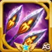
1er – Lance du Destin (Artefact d’arme)
Bonus de statistiques : Esquive +8 898
Effet : Lorsque Dante utilise sa compétence ultime, tous les alliés reçoivent un bonus d’Esquive pendant 9 secondes. Cela augmente directement les déclenchements de Riposte et la survie de l’équipe, ce qui en fait l’artefact le plus impactant en attaque comme en défense.
Priorité d’évolution : Très élevée – À maximiser en premier. Le bonus d’Esquive est crucial pour le kit de Dante et la synergie d’équipe, surtout en PvP et dans les combats longs.

2e – Livre des Illusions (Artefact livre)
Bonus de statistiques : Esquive +2 967, Santé +53 394
Effet : Augmente la survie et l’Esquive de Dante, le rendant plus difficile à éliminer et plus susceptible de déclencher la Riposte. Le bonus de santé est particulièrement utile dans les combats longs et contre les équipes burst. Note : Cet artefact n’améliore que Dante lui-même, pas toute l’équipe, et n’augmente pas le bonus d’Esquive des alliés.
Priorité d’évolution : Moyenne – À améliorer après l’arme et l’anneau. Les bonus sont précieux pour Dante, mais l’impact global d’équipe est inférieur à celui de l’anneau.

3e – Anneau d’Agilité (Artefact anneau)
Bonus de statistiques : Agilité +3 990
Attaque physique provenant de l’Agilité : 11 970
Armure provenant de l’Agilité : 3 990
Effet : Augmente la statistique principale de Dante, renforçant tous ses dégâts et son armure. Plus important encore, l’Attaque physique augmente directement le bonus d’Esquive que Dante accorde à toute l’équipe via son ultime (Prévoyance). Cela signifie plus de survie et plus de déclenchements de Riposte pour tous. À prioriser après l’arme pour un impact maximal sur l’équipe et le DPS.
Priorité d’évolution : Élevée – À améliorer après l’arme. Le bonus d’Agilité/Attaque physique est essentiel pour les dégâts de Dante et le buff d’Esquive pour les alliés.
Priorité d’évolution des glyphes de Dante – Hero Wars Alliance
Améliorer les glyphes de Dante dans le bon ordre est essentiel pour maximiser ses dégâts, son contrôle et sa survie. Voici le meilleur ordre d’amélioration, basé sur l’impact réel sur le DPS, la synergie d’équipe et la progression dans les combats longs.
1er – Glyphe d’Attaque physique
Augmente directement les dégâts de toutes les compétences et attaques de base de Dante. C’est le glyphe le plus important pour booster son DPS et son impact global en combat.
Statistiques niveau 80 : +8 340 Attaque physique
Priorité d’évolution : Très élevée – À maximiser en premier pour le plus grand gain de dégâts.
2e – Glyphe d’Agilité
L’Agilité est la statistique principale de Dante, augmentant tous ses dégâts et son armure. Chaque point apporte aussi de l’Attaque physique et de l’Armure supplémentaires, ce qui en fait une priorité majeure pour l’attaque comme pour la défense.
Statistiques niveau 80 : +2 110 Agilité
+6 330 Attaque physique
+2 110 Armure
Priorité d’évolution : Élevée – À améliorer après l’Attaque physique pour une meilleure progression et survie.
3e – Glyphe d’Esquive
L’Esquive est cruciale pour déclencher la Riposte et éviter les attaques ennemies. Plus d’Esquive signifie plus de contre-attaques et une meilleure survie, surtout en PvP et contre les équipes physiques.
Statistiques niveau 80 : +4 170 Esquive
Priorité d’évolution : Moyenne à élevée – À prioriser après les glyphes de DPS si vous voulez plus de contrôle et de contre-jeu.
4e – Glyphe d’Armure
L’Armure augmente la résistance de Dante aux dégâts physiques, l’aidant à survivre plus longtemps dans les combats difficiles. Importante pour la défense, mais moins impactante que le DPS ou l’Esquive pour son style de jeu.
Statistiques niveau 80 : +12 850 Armure
Priorité d’évolution : Moyenne – À améliorer après les glyphes principaux de DPS et d’Esquive pour plus de robustesse.
5e – Glyphe de Santé
La Santé augmente les PV totaux de Dante, le rendant plus difficile à éliminer. Utile pour survivre aux bursts, mais moins critique que les statistiques améliorant ses compétences ou son contrôle.
Statistiques niveau 80 : +122 800 Santé
Priorité d’évolution : Moyenne – À améliorer en dernier, après avoir maximisé les glyphes offensifs et de contrôle.
Best Teams for Dante Hero Wars Alliance
- Octavia, Iris, Tempus, Dante, Drayne
- Octavia, Iris, Dante, Drayne, Corvus
- Octavia, Iris, Morrigan, Dante, Corvus
- Octavia, Heidi, Nébula, Dante, Andvari
- Octavia, Heidi, Nébula, Dante, Drayne
- Aidan, Iris, Tempus, Dante, Kayla
- Aidan, Guus, Dante, Kayla, Julius
Conclusion – Guide des reliques légendaires de Dante (Hero Wars Alliance)
Dante se distingue comme l’un des héros les plus polyvalents et puissants de Hero Wars Alliance, surtout grâce à ses améliorations de reliques légendaires. En priorisant ses statistiques d’Attaque physique et d’Agilité, en faisant évoluer les bonnes compétences et glyphes, et en choisissant les meilleurs artefacts et skins, vous pouvez maximiser à la fois ses dégâts et sa survie. Concentrez-vous d’abord sur ses compétences Riposte et Changement de focus, investissez dans l’Esquive pour plus de contre-attaques, et n’ignorez pas la synergie entre ses artefacts et les bonus d’équipe. Avec la bonne configuration, Dante peut dominer aussi bien en PvP qu’en PvE, contrôler le champ de bataille et mener votre équipe à la victoire.
Conseil : Adaptez toujours vos améliorations à la composition de votre équipe et aux ennemis affrontés. Pour des stratégies plus avancées, consultez nos autres guides et laissez votre avis ci-dessous !
Suggestion de vidéo

Explorez de nouveaux héros en vedette !

Laissez votre avis !
Avez-vous aimé notre guide sur la relique légendaire de Dante ? Y a-t-il quelque chose que vous n’avez pas compris ou pour laquelle vous souhaiteriez suggérer des améliorations ? Nous vous invitons à rejoindre notre section de commentaires sur la page du blog Alexandre Games. N’hésitez pas à exprimer votre opinion, poser vos questions et partager vos suggestions.
Cliquez sur le bouton ci-dessous pour commencer :